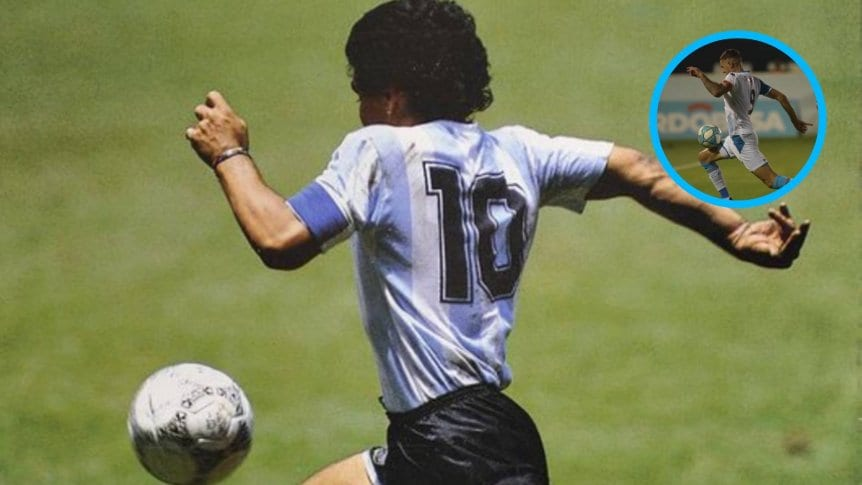
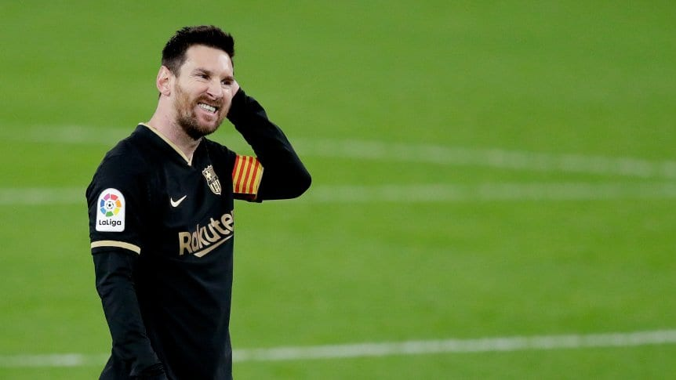

Si eres un gran amante del deporte rey, seguro que te interesa estar al día de las noticias y curiosidades del fútbol. Acabas de llegar al sitio adecuado porque en nuestro blog de fútbol no dejamos de buscar anécdotas, novedades y todo lo que quieres saber de este emocionante deporte. Te damos la bienvenida y esperamos que disfrutes de todo el contenido que publicamos.
Falta bastante para el Mundial de FIFA de Qatar 2022, sin embargo, ya está todo pensado para su desarrollo. Una de las cosas más curiosas es que ya está prevista la ciudad sede de lo que será la final: la ciudad de Lusail... ¡que aún no existe!
El capitán y delantero de Belgrano fue capturado controlando la pelota con una pose similar a la de Diego en la final en el Mundial de 1986.
El conjunto de Lionel Messi sigue acumulando malos resultados en el certamen local y se complica.
